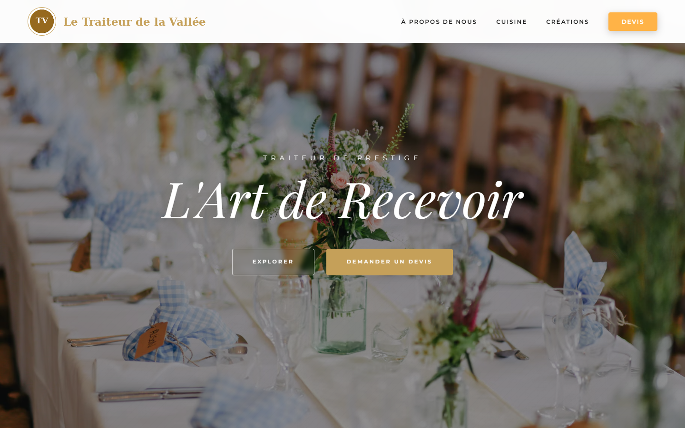
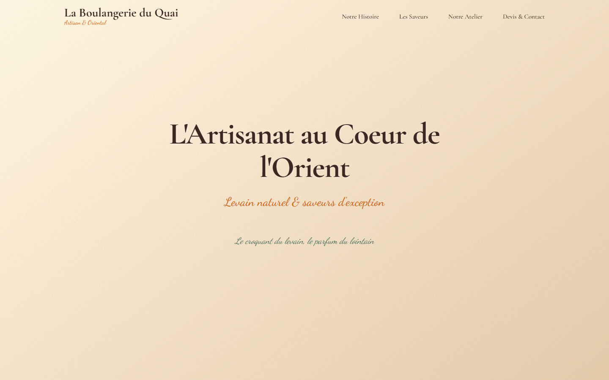
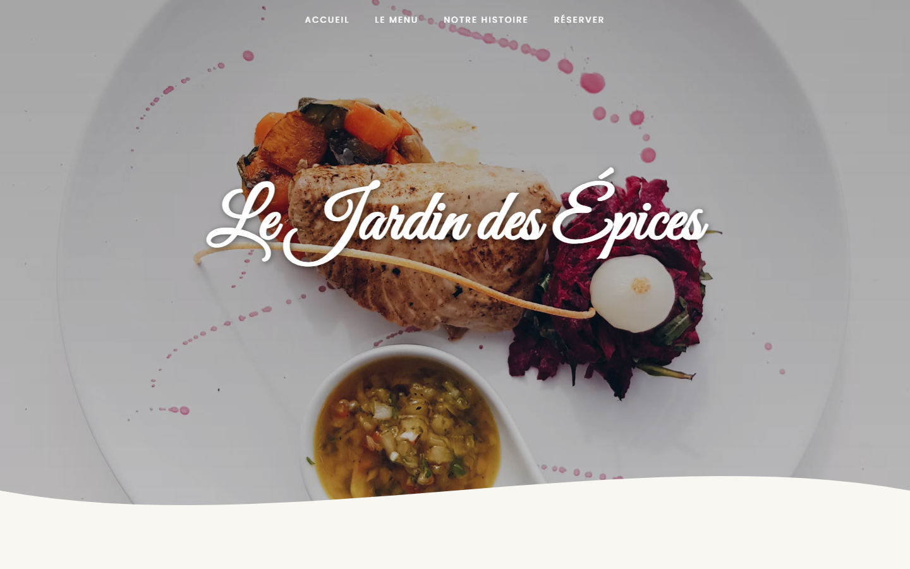
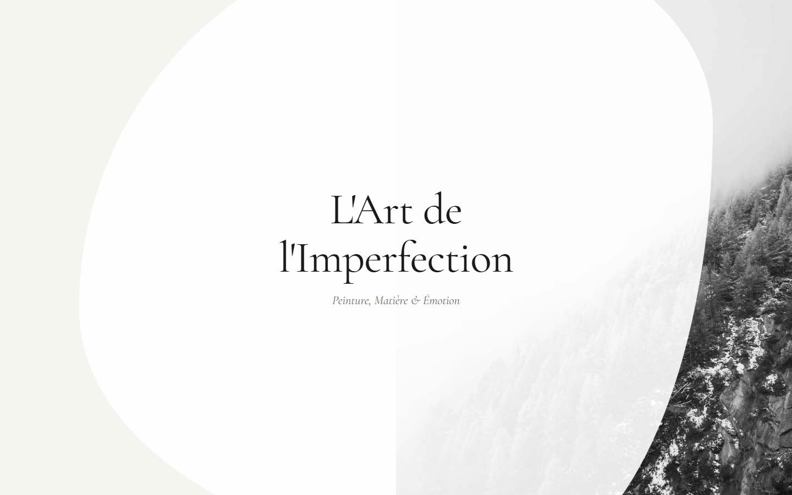
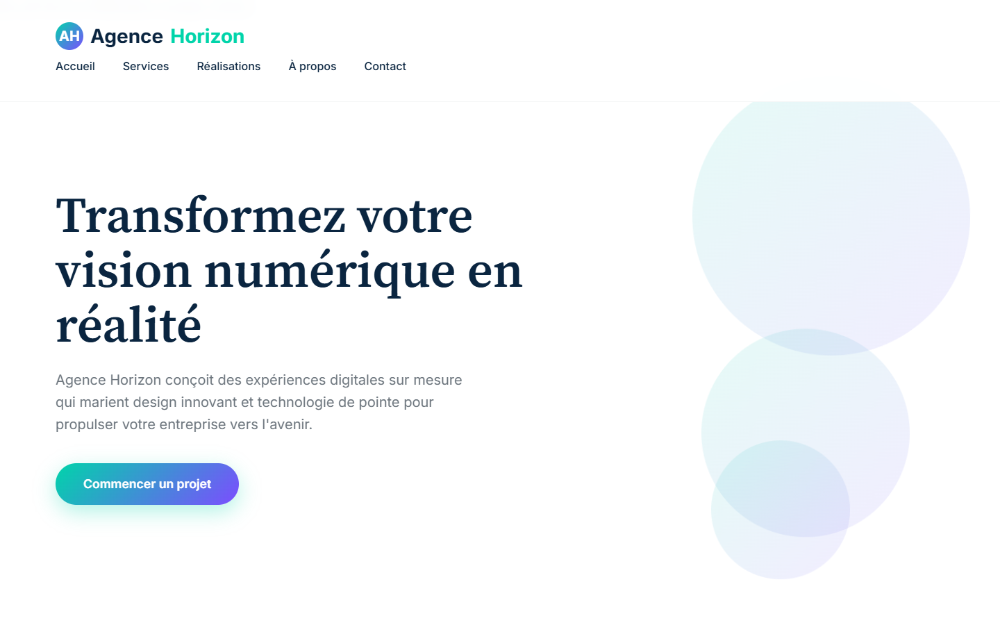

Le Traiteur de la Vallée
Traiteur pour mariages et réceptions, entre cuisine française et saveurs orientales.

La Boulangerie du Quai
Boulangerie artisanale : pains au levain, pâtisseries et douceurs orientales.

Le Jardin des Épices
Restaurant indien : la carte, l'ambiance et la réservation.

Atelier Lumen
Galerie d'une artiste : les œuvres s'ouvrent en grand, avec leur fiche.

Agence Horizon
Agence web : services, réalisations et contact.